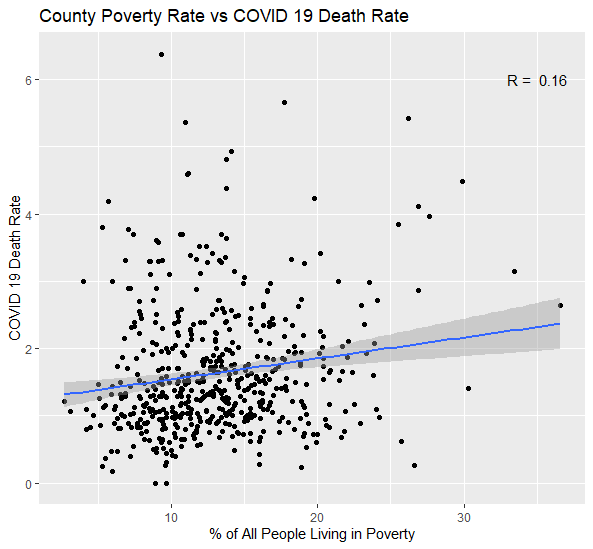

Most prominently, a study from the Harvard T.H.Chan School of Public Health found that "a small increase in the long-term exposure to PM 2.5 leads to a large increase in the COVID-19 death rate". Many other studies confirm these findings for other regions and pollutants other than PM2.5. However, replicating these research findings with simple regressions and public data is more difficult then one might think. Let's have a look on a country-by-country basis first.
As can be seen above, the level of air quality as measured the mean annual PM 2.5 air pollution concentration, varies a lot between country. Given the results of multiple studies (as summarised on our literature review page) one might think that we might now see a correlation between PM 2.5 and COVID-19 death rate on a country-by-country basis. However, this is not the case:
How come? There are two main reasons why it is difficult to look at this issue with average country-by-country data. Firstly, air pollution is a highly localised issue. Most particulate matter comes from so called "point sources". So unlike CO2, which is an atmospheric gas with similar concentrations everywhere (apart from the North Pole), particulate matter concentrations are much higher close to their sources than elsewhere. Most particles form in the atmosphere as a result of complex chemical reactions of sulfur dioxide and nitorgen oxides, which are pollutants emitted from power plants, industrial plants but also automobiles. This means that looking at national mean values is not necessarily picking up in which region air concentration is high and the correlation with COVID-19 deaths might not be linear.
Secondly, data on COVID-19 death rates, measured as deaths per 100k, is highly dependant on testing. In countries with less testing, or improper reporting of the reason of death, this measure is not representative. Take the example below: When we start to look at regions with high test rates and high levels of reporting the reason for death (taking countries in the EU as a proxy-group), we see a positive correlation emerging.
"Our word in data" has some great charts to show the extent of testing relative to the scale of the outbreak in different countries. The chart below shows the daily number of tests on the vertical axis agains the daily number of new confirmed cases on the horizontal axis - per million people. We can see that some countries are doing ten or hundred times fewer tests than other countries but still report a similar number of new confirmed cases. Our world in data explains: "Where the number of confirmed cases is high relative to the extent of testing, this suggests that there may not be enough tests being carried out to properly monitor the outbreak".
Since previous studies successfully found a strong correlation between PM2.5 and COVID-19 death rate in China, we decided to see if there is a similarly strong correlation between SO2, another major pollutant, and COVID-19 death rate in China.
Note on data we used: For both China COVID-19 data and China air quality data, we used datasets provided by Harvard dataverse, and both data run from February to October 2020. If you want to play around with the same datasets, you can access China COVID-19 data here and China air pollution data here.
To get a general sense of the SO2 level and the COVID-19 death rate in China, we first compare two heatmaps of China, one containing information about the COVID-19 death rate across provinces and the other containing information about the SO2 level across provinces.
Since the two heatmaps show similar trends across Chinese provinces (i.e. provinces with higher SO2 level generally have higher COVID-19 death rates, and those with lower SO2 level generally have lower COVID-19 death rates), we decided to make a scatteplot that shows the same result in more orderly fashion.
Just as expected, the scatterplot clearly shows that there is a strong positive correlation between SO2 level and COVID-19 death rate across Chinese provinces. Here, each dot represents one province. Next, we decided to make another scatterplot of two variables, but this time using city-level data instead of province-level data.
Bingo! The correlation between SO2 level and COVID-19 death rate in China is 0.55, which is both strong and positive. Here, each dot represents one city, and that's why there are more dots included in the graph. Our results align with similar studies on China related to the correlation between air pollution and COVID-19 death rate.
However, it should be noted that the strong positive correlation between the level of SO2 and COVID-19 death rate does not necessarily indicate a causal relationship between two variables. First, we do not know which of these two variables, if any, is a dependant variable. Second, even if we do, there might be one or more confounding variables that affect the correlation between SO2 level and the death rate. Therefore, in order to find out if there is a causal relationship between the two, we need to control other confounding variables, and that is beyond the scope of this page.
To find out whether there is a recognisable relationship between air pollution and COVID-19 death rate, we visualized COVID-19 Death rate per 100,000 inhabitants, as well as recent mean annual air pollution on a US-State level.
Because US states are so large and so heterogeneous in terms of high and low pollution areas (cities vs. rural), at very best a weak correlation can be found (R2=0.02873). Note the difference to the China analysis above, which used data from cities only. This illustrates the local nature of air pollution. In general, cities have clusters of industry around them, power plants in the vicinity to provide them with electricity and a lot of cars and public transport. Pollution levels might be very high in one city, and completely normal 50km further on the country side. Using average data for regions as large as US states is thus difficult.
Here is PM 2.5 air pollution heat map & regression ananlysis graph. We can detect PM 2.5 data is weak correlate(R2=0.02873) with COVID-19 Death in U.S.
This graphic shows how COVID death rate per case varies across US counties.
We see here that there is a very weak correlation with little explanatory power over the 500+ counties with PM2.5 data.
For context, here is how COVID death rate per case is correlated with county poverty rate (in the counties represented above):
Controlling for nothing else, county-level poverty rate is a far better indicator than PM2.5 (when controlling for nothing else).
However, since there is COVID death rate data and poverty data for more than 3000 counties, a more statistically precise correlation can be calcualated.
This graphic shows how county-level poverty rate varies accross US counties.
Repeating the same analysis above, a more explanatory relationship emerges with a much higher degree of precision.
With the data available from the EPA for 2019, there is no clear correlation between PM2.5 particles and COVID Death Rate without controlling for ommitted factors correlated with both PM2.5 particles and COVID Death Rate, such as amount of economic activity taking place in a county. A more complicated analysis could show such a correlation, but using PM2.5 concentrations without controlling for other factors to predict COVID Death Rate would have little benefit.